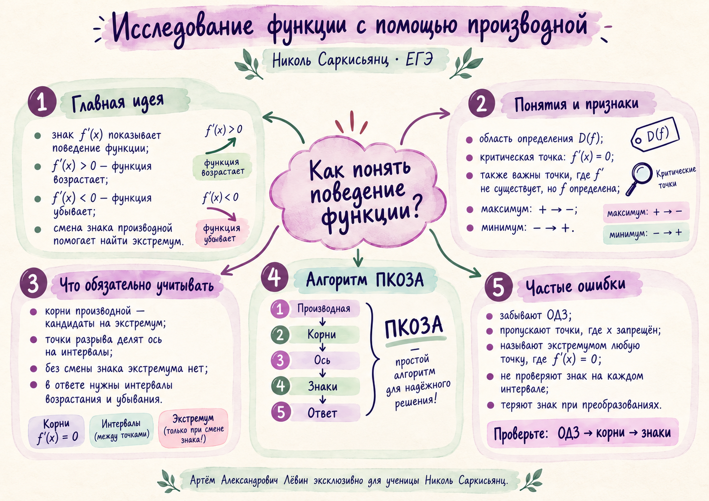

Интерактивное пособие · профильный ЕГЭ
Исследование функции
с помощью производной
Связываем знак производной с возрастанием и убыванием функции, находим критические точки, проверяем смену знака и определяем локальные экстремумы.
Николь СаркисьянцЛёвин Артём АлександровичЕГЭ · профильная математика14 сентября 2026
Цель: уверенно проходить цепочку «область определения → производная → критические точки → интервалы → знаки → ответ» и различать критическую точку, точку разрыва и точку экстремума.
1 · смысл знака2 · алгоритм ПКОЗА3 · четыре конструкции4 · тренировка5 · самопроверка
Наглядная памятка к занятию
Короткая визуальная опора по знаку производной, критическим точкам, экстремумам и алгоритму ПКОЗА.

Пример 1
Кубическая функция: две критические точки
Что дано
f(x) = 1/3·x³ − 1/2·x² − 6x + 5.
Идея решения
Получить квадратную производную, разложить её на множители и прочитать смены знака.
+x = −2−x = 3+
Функция возрастает на (−∞; −2) и (3; +∞), убывает на (−2; 3). При x = −2 расположен локальный максимум, при x = 3 — локальный минимум.
Открыть режим кубической функции →
Пример 2
Корень: сначала ОДЗ, затем производная
Что дано
f(x) = −x√x + 3x + 1.
Смысл условий
D(f) = [0; +∞). Для дифференцирования удобно записать x√x = x^(3/2).
f′ > 0 на (0; 4)x = 4f′ < 0 на (4; +∞)
В точке x = 4 расположен локальный максимум. f(4) = 5, поэтому точка максимума — (4; 5).
Частая ошибка: в произведении x√x нельзя дифференцировать только корень.
Открыть режим функции с корнем →
Пример 3
Дробь: запрещённая точка обязательно делит ось
Что дано
f(x) = (x² + 289)/x.
Смысл условий
x ≠ 0. Точка x = 0 участвует в разбиении оси, но не является точкой экстремума.
+−17−0 запрещено−17+
Локальный максимум: (−17; −34). Локальный минимум: (17; 34).
Открыть режим дробно-рациональной функции →
Пример 4
Произведение: факторизация производной упрощает анализ
Что дано
f(x) = (x + 6)²(x − 10) + 8.
Идея решения
Применить правило производной произведения и вынести общий множитель.
Факторизованный вид сразу показывает критические значения x = −6 и x = 14/3 и подготавливает определение знаков производной.